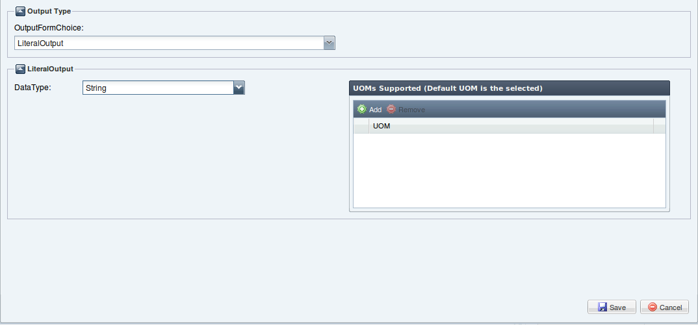
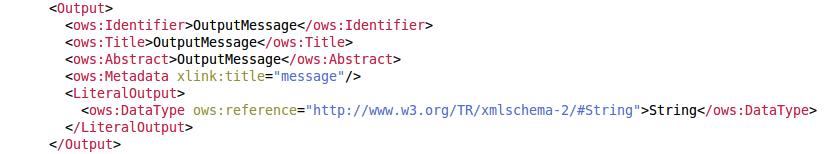

Indicates that this output shall be a simple literal value (such as an integer) that is embedded in the execute request, and describes the possible values.
The Literal Output in the wizard can be defined by the following interface:

DataType: on the left of the form you can choose the DataType of this output(short,int,double,String,float,boolean,long,byte).
UOMs: list of units of mesaure supported of this numerical output. The default UOM is the item selected.
The result we get (in WPS Current Process Description text area) to click the Save button is shown in the following:
